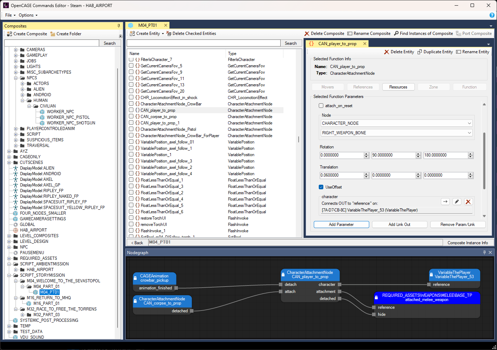
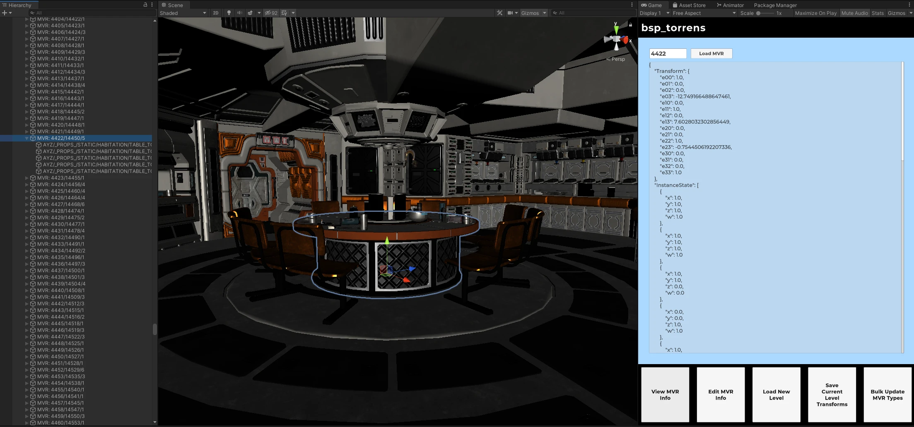
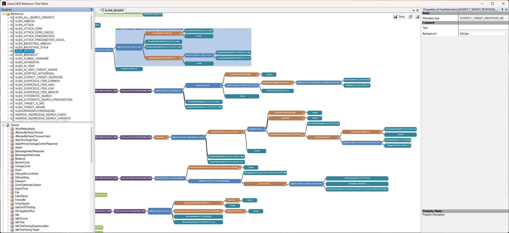
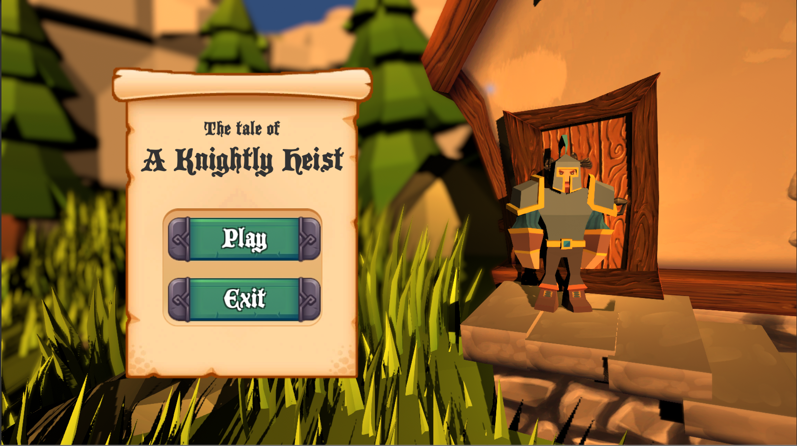
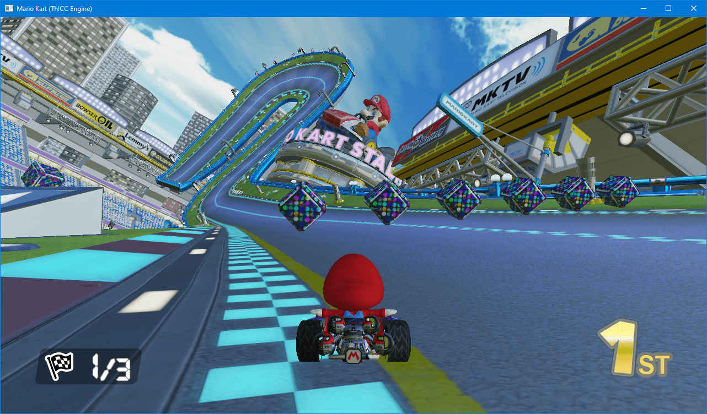
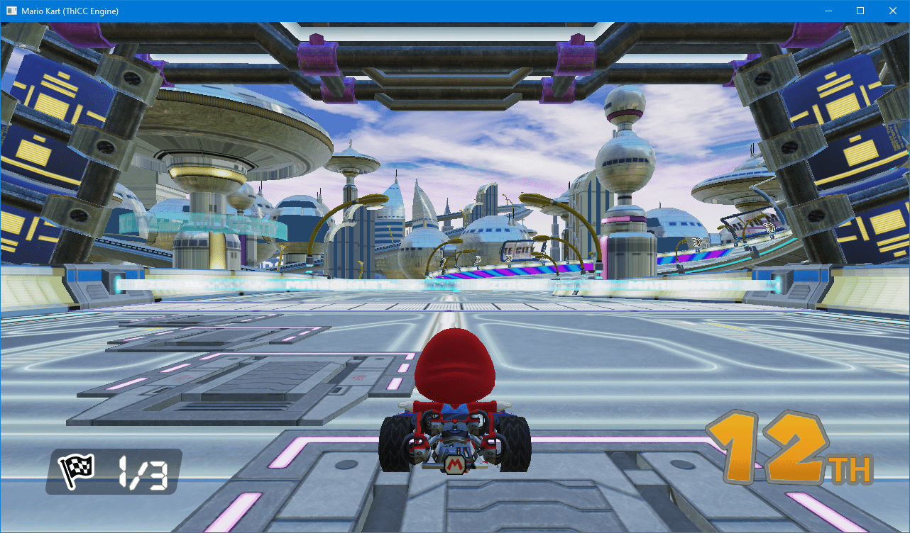
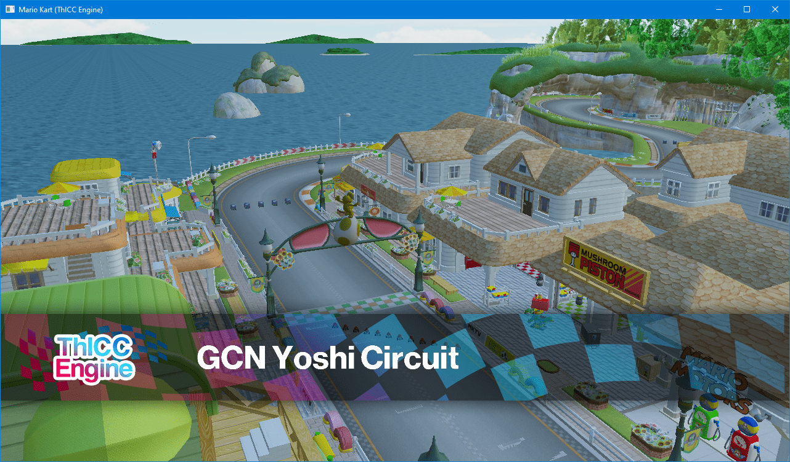
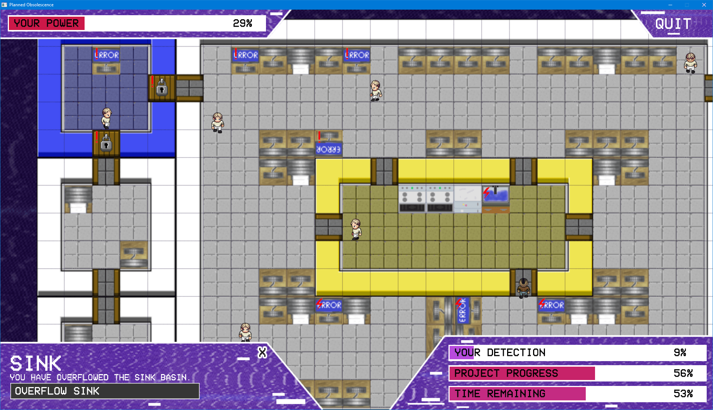

About Me
Hello! I'm Dyllan, a Cornell M.Eng. student studying electrical and computer engineering with an interest in robotics, embedded systems, RTL design, and basically anything tech-related.
OpenCAGE
OpenCAGE is a suite of mod tools for Alien: Isolation.

You can import, modify, and export models with their associated materials, textures, and shaders. You can modify the game's UI and tweak any configuration for characters, weapons, and more. You can dive deep into every behaviour tree in the game, and modify them via a graphical node interface. You can even script entire new levels, or modify scripts in existing ones using an editor that I built from scratch for the game's proprietary scripting formats.
The project has been years in development, and has expanded from simple file tweaks to the complex game-altering scripts that you can achieve today with ease. It's something I'm immensely proud of, and continues to be a passion project that I work on when my free time allows.
I've been lucky enough to talk to a number of the game's original development team over the years, which has been an amazing learning experience. For context: Alien is built on a custom engine named Cathode, which was developed by the Creative Assembly exclusively for this game. Slowly picking it apart and understanding its design has been eye opening, and has really helped drive my passion for expanding the tools.

As an extension of this project, I had the chance to work with the awesome Tommy Thompson from AI and Games. We collaborated on a video diving deep into the Xenomorph's AI - check it out here! I was also later involved in his retrospective of the game's development, where I spoke at length about my work on OpenCAGE!
I'm also credited on a few other Alien projects, including the book Perfect Organism, and a neat PC Gamer article about the game's scrapped intro sequence, which I found while digging through the game's files. Thanks to Andy Kelly for his effort on those!
OpenCAGE itself has also featured in a number of popular YouTube videos about the game's systems, notably one from Slippy Slides diving into the Xenomorph's off-screen behaviours.

I'm still tinkering away on the tools in my spare time, and sometimes use them to create my own mods which serve as great promotional material when I'm ready to release a big update. Find them also on this site!
Visit OpenCAGE on GitHub Download on SteamA Knightly Heist

Created in a team of six over a few days, this game places you in the role of a knight who has travelled into the future to steal artefacts from a museum.
The aim of the game is to collect as many artefacts as possible and escape back through the portal before you're caught by the guards.
This project was developed in just over a week as a game jam in a team of 6.
Download View Source on GitHubLevel Streaming
This project is a demo implementation of a grid-based level streaming system, complete with a custom archive format for models and textures, as well as a level editor and content management tool.
The system is implemented in DirectX11 and is fully self contained. Import some models (they must be triangulated, have DDS textures, and have material groups) and create some levels!
Levels are automatically segmented into a grid (of user-specified size). These levels are loaded at different levels of detail, depending on the player camera's position.
Download View Source on GitHubSkybox Generator
For my dissertation in my final year of University I worked towards creating a toolkit that could produce inexpensive and realistic skyboxes for games. While the project unfortunately didn't fully complete in the given time due to its complexity, it did manage to solve a couple of novel problems.
The project aimed to solve the issue of rendering detailed skies in hardware-limited spaces, such as VR, due to the recent popularity of the Oculus Quest. While pre-rendered skies have been used for years, the project proposed a method of generating skies utilising machine learning to drive a volumetric ray marcher, which could generate realistic skies offline paired with an analytical sky model.
To produce the project I worked with Dr Thomas Bashford-Rogers and some unpublished experimental tools (now released) for cloud classification.
Unfortunately the machine learning side of the project wasn't completed in time for deadline, however the data collection toolkit and ground work for the renderer were completed. The data collection toolkit solved some novel issues, such as HDR upscaling. All of this is detailed in my final report.
Reports View Source on GitHubText Adventure Toolkit
As part of my engine architecture module at university I was tasked with implementing a text adventure in multiple engines. To take this one step further, I also produced a tool alongside these implementations which would allow you to produce the text adventure "script" in a designer-focussed flowchart editor, localise it into a number of languages, and then output your creation to one of three engine implementations: Unity, Unreal and OpenGL.
The tool had a focus on being designer friendly and simple to use, and to highlight that I produced documentation alongside it which explained how to utilise the flowchart interface and also how to use the tools reliably.
Download View Source on GitHubPlant Generator
This project is an implementation of a plant model editor in DirectX11. Plant model parts are loaded from a configuration file, and able to be positioned and tweaked by users.
When editing has finished, the resulting model can be saved out to disk, with options for high/medium/low poly versions.
The default configuration includes editors for plants and grass, however can be expanded to suit requirements.
Download View Source on GitHubAtari 2600 Superhot
Created in a team of six over a few days, this game is a "demake" of Superhot, styled for the Atari 2600. We attempted to recreate the feel of an old console by utilising the correct resolution, colour scheme, sounds, and art.
Our aim with the game was not only to produce it quickly through fast iteration, but to have something that was fun to play and easy to pick up.
The game was intended to use some USB NES controllers we had, however all inputs remap to keyboard - with spacebar and W/A/S/D.
Download View Source on GitHubMario Kart DX12

This was a project in a team of 4 to create an engine framework capable of running a Mario Kart style game, utilising DirectX12. The final engine and Mario Kart based game came together quite nicely over a few months of work.
The main focus of this project was building the engine, so a significant focus was placed on producing reuseable systems rather than bespoke functionality for the Mario Kart project. We created a number of systems for physics, audio, asset management, and more - all of which are non-specific to the Mario Kart game and could allow the engine to be easily repurposed for another title.
The core of the engine backend relies on a toolkit which allows access to most of the engine's core features through a GUI with a range of functionalities for asset importing (models/sounds/images/etc), configuration customisation (fonts/keybinds/cameras/glyphs), and a series of other things. We also embedded some more bespoke features into the engine toolkit, for example, item configurations.

Our asset pipeline was developed around a system I referred to as "asset comps": the idea of importing a series of assets which build up a compilation for a specific use. This "use" was then read-in by the engine itself to provide the assets for a certain entity. For example, a character would have a comp which specified its model, sounds, name, and more. When an asset is assigned to a comp it is tagged - asset tagging became useful to prevent the deletion of in-use assets, and also would be useful for releasing a project and making sure it does not ship with any development (or upcoming) assets.
Levels are created for the engine through Blender, which utilises our own plugin that I developed for placing points in the world representing collision volumes (for lap checkpoints), item boxes, and more. This is a nice graphical way of adding entities within the map without using magic numbers. A level in the engine is built up by one or two models, one model supporting mesh collision, and the other being effectively background scenery. This was implemented later in development as we reached memory caps with larger levels as just one SDKMESH.
The engine utilises the new SDKMESH2 format for PBR materials. All imported models have a bounding box automatically calculated, unless importing as a map, in which case mesh collision data is produced. Mesh collision data is stored in a proprietary file format which is a binary representation of each triangle in the model, which the engine's mesh collision system traverses to calculate collision responses. Another simple propriatary format is utilised for animated materials: these binary files work by storing a number of frames, and the timing intervals between them. The model renderer then applies this information at runtime when rendering each material.

To read a bit more about the engine, check out the repo below, or download the final game and give it a try!
Download View Source on GitHubPlanned Obsolescence
Planned Obsolescence was a game created in a group of three with a tangential link to the film Ex Machina. You play as an AI named TIM - the Totally Intelligent Machine - who is in control of a research lab currently working on a project to develop a new AI that supersedes TIM. The aim of the game is to delay the project to replace you so that it is eventually cancelled and you can remain in control.
The game features a full AI system and dynamic gameplay through a randomly selected map from the available map pool, there are also mappable keybinds and varying resolutions, as well as support for three languages.

As well as developing the game itself, I created a toolkit alongside the project which allowed us to produce maps and customise game elements through a friendly UI. The toolkit handled compiling game maps to improve performance of the game at runtime, as well as a few other handy features. As a result of the toolkit's map builder we saw a massive boost in performance, rendering just one map sprite instead of hundreds of individually placed tiles.
I also produced the logo for the game and created the UI, which I'm quite pleased with - it's a nice simple style which reflects the tone of the game well.
While the tool worked with XML, all data required by the game was compiled to JSON files at the map compile time, allowing for the nlohmann JSON library to be used within the game for parsing config files.
We completed the project in a couple of months and the final result came together quite nicely. It was shown to other students and staff in our class through an "expo" day, where it received positive feedback. I took some of the critiques that players had (such as highlighting tiles when clicked, and the need of a better tutorial) and implemented them into the game after the "expo" day.
The game can be downloaded below, with the editing tools available in the GitHub repo. Make some maps!
Download View Source on GitHubThe Founders
The Founders is a game designed for touchscreen, with local multiplayer in mind. Each player takes a role aboard a ship floating through space, with abilities ranging from movement to firing.
The aim of the game is to fly through space and collect contracts, after "consulting" with them to make them small enough to collect. The game is supposed to be a metaphor for a small organisation taking on projects and managing workloads.
Download View Source on GitHubRace to Mars
As a lesson in designing and balancing game mechanics I developed a board game with a group. We worked as a team of five to decide on a theme for the game based on current news events, landing on the current SpaceX/Nasa Mars projects. From there we brainstormed a number of game ideas, eventually landing on the idea of a co-op game that had a win condition of getting to Mars successfully.
After creating the board game, two of our team moved on to create a four player networked version of the game for PC using the framework 'ASGE' for OpenGL. The game featured the core feature set from the board game as well as the networking mechanics you would expect, such as disconnect/reconnect, chat, and lobbies.
To see more about the networked game, check out the links at the bottom of this page, or read on to learn about the process of creating the board game which later became the PC game.
Initially we planned on having a system where players were assigned a number of movement points each turn and they would use those to move around a ship on the board. When moving to a space, they could fix any issues that were outstanding out of a number of issues that were pulled each turn. We quickly realised this complex movement was over complicated and didn't work for the game, so we decided to keep movement, but simplified. Less spaces were on the board to move between and movement points were taken from your dice roll which also add up to give you points to spend to fix issues.
Each turn, a counter representing the spaceship you're moving within is moved on the board and when it reaches Mars, you've won. To do that, you must keep your issues on-board below 5, completing all of them before being able to land on Mars itself. Added throughout the spaces are icons that prompt to you draw an objective card. Objective cards are a mechanic I introduced during our early play tests as there simply wasn't enough to do each turn. The objectives added a mechanic to work against your team in order to recieve personal points that would put you as the overall winner at the end of the game if you had the most.
The objective cards worked well to add another depth to the game outside of its core loop, however during testing we removed the personal points you gained and introduced team rewards that benefit everyone. Keeping track of personal points gained by working against your team didn't suit our USP of a co-op board game designed with team building in mind. Although you still sometimes work against eachother to complete objectives, it is always for the team's benefit.
As part of the project I developed an online card creator for the team to use that allowed anyone to produce effectively "production-ready" cards for the game. This was very valuable as it sped up our workflow massively and allowed us to playtest with final card designs and iterate on the card's contents without re-editing Photoshop documents!
Linked below is the presentation used to show our playtesting changes and final game concept, as well as a link to the card generator. Also below is our group's rule demonstration video.
Download View Source on GitHub View Presentation Visit Card Generator